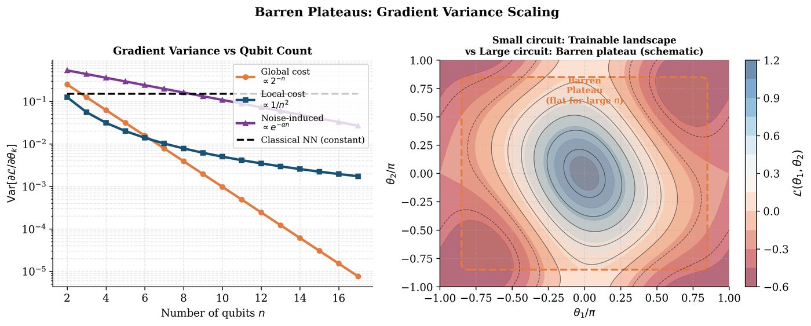
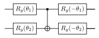

Chapter 16: Barren Plateaus and Trainability of Quantum Models¶
Barren plateaus are regions in the parameter landscape of variational quantum circuits where gradients vanish exponentially with system size, rendering training impractical. This chapter presents the rigorous theory of barren plateaus, their causes (global cost functions, random initialization, noise, entanglement), and practical mitigation strategies including local cost functions, layer-wise training, identity blocks, and correlation-aware initialization.
Learning Objectives
By the end of this chapter, you will be able to:
-
State the barren plateau theorem and its proof sketch
-
Identify which ansatz and cost function choices lead to barren plateaus
-
Distinguish noise-induced from expressibility-induced barren plateaus
-
Apply mitigation strategies: local costs, LBFGS, layerwise training
-
Design trainable ansatze that avoid barren plateaus
16.1 The Barren Plateau Phenomenon¶
Definition: Barren Plateau (McClean et al., 2018)
A barren plateau (McClean et al. 2018) occurs when, for a parameterized quantum circuit \(U(\boldsymbol{\theta})\) and cost function \(\mathcal{L}(\boldsymbol{\theta}) = \langle\hat{O}\rangle\), the gradient variance vanishes exponentially with system size \(n\):
This means both \(\mathbb{E}[\partial_k\mathcal{L}] = 0\) and \(\mathbb{E}[|\partial_k\mathcal{L}|] = O(b^{-n/2})\), requiring exponentially many shots to estimate the gradient.
The physical intuition: if \(U(\boldsymbol{\theta})\) is a 2-design (approximates Haar-random unitaries), all output states concentrate near the maximally mixed state, making the cost function flat everywhere.
16.2 Barren Plateau Theorem¶
Definition: Barren Plateau Theorem (McClean et al., 2018)
Let \(U(\boldsymbol{\theta})\) be a random quantum circuit forming a 2-design on \(n\) qubits, and \(\mathcal{L} = \langle\psi(\boldsymbol{\theta})|\hat{O}|\psi(\boldsymbol{\theta})\rangle\) where \(\hat{O}\) is a global operator (\(\hat{O}\neq I^{\otimes k}\otimes\hat{o}\) for \(k=O(n)\)). Then:
The gradient variance decays at least as fast as \(4^{-n}\).
Proof sketch:
-
Write \(\partial_k\mathcal{L} = \frac{1}{2}[\mathcal{L}(\theta_k+\pi/2) - \mathcal{L}(\theta_k-\pi/2)]\) (PSR).
-
Decompose \(U(\boldsymbol{\theta}) = V_R R_k(\theta_k) V_L\) where \(V_{R,L}\) are the remaining circuit parts.
-
Under Haar measure on \(V_L\), \(\rho_L = V_L|0\rangle\langle 0|V_L^\dagger\) concentrates near \(I/2^n\).
-
The variance integral over \(V_L\) involves the second moment of the Haar measure, yielding the \(4^{-n}\) bound via the formula \(\mathbb{E}_U[U A U^\dagger \otimes U B U^\dagger] = \frac{\mathrm{Tr}[A]\mathrm{Tr}[B]}{d^2-1}I\) for \(d=2^n\).
16.3 Sources of Barren Plateaus¶
16.3.1 Global Cost Functions¶
Important
Global vs. local costs: A cost function is global if it involves correlations between all \(n\) qubits (e.g. \(\hat{O} = |\mathbf{0}\rangle\langle\mathbf{0}|^{\otimes n}\), the \(n\)-qubit projector). It is local if it decomposes as \(\hat{O} = \frac{1}{n}\sum_i\hat{o}_i^{(k)}\) where each \(\hat{o}_i^{(k)}\) acts on \(O(1)\) qubits around qubit \(i\).
Local costs avoid barren plateaus: their variance decays at most polynomially.
16.3.2 Expressibility-Induced Barren Plateaus¶
Highly expressible ansatze (those forming approximate \(t\)-designs) suffer exponentially vanishing gradients. There is a fundamental tension:
Consequence: Shallow, structured ansatze (hardware-efficient, problem-inspired) may be better for training despite having lower expressibility.
16.3.3 Noise-Induced Barren Plateaus¶
Wang et al. (2021) (Wang et al. 2021) showed that depolarizing noise induces barren plateaus even in shallow circuits:
For a circuit of depth \(L\) with depolarizing noise rate \(\lambda\) per gate, the gradient decays as:
This grows exponentially worse with depth \(L\), making deep noisy circuits untrainable regardless of initialization.
16.3.4 Entanglement-Induced Barren Plateaus¶
Marrero et al. (2021) showed that highly entangled states in the latent space of QNNs lead to barren plateaus. Specifically:
where \(S_2(\rho_A) = -\log\mathrm{Tr}[\rho_A^2]\) is the Rényi-2 entropy of a subsystem \(A\).
16.4 Mitigation Strategies¶

16.4.1 Local Cost Functions¶
Replace global cost with local equivalents:
Cerezo et al. (2021) (Cerezo et al. 2021) proved that local costs have polynomial (rather than exponential) gradient decay with depth.
16.4.2 Identity Block Initialization¶
Initialize each parameterized block to the identity: \(U(\mathbf{0}) = I\). This keeps the circuit near identity at initialization, where gradients are \(O(1)\) before training (Grant et al., 2019).
Identity block construction:

At \(\theta_1=\theta_2=0\): circuit is identity (up to global phase). Small perturbations give \(O(1)\) gradients.
16.4.3 Layer-Wise Training¶
Train the circuit layer by layer:
-
Fix all layers except layer 1 to identity; train layer 1 until convergence
-
Fix layer 1; add and train layer 2
-
Repeat until all \(L\) layers are trained
-
Fine-tune all layers jointly
This prevents deep circuits from entering the barren plateau regime during early training.
16.4.4 Problem-Informed Ansatze¶
Use the symmetries and structure of the problem:
-
UCCSD ansatz: Chemically motivated, respects particle conservation
-
QAOA: Problem Hamiltonian structure guides circuit design
-
Equivariant circuits: Circuits that commute with symmetry operators of the problem; guaranteed to stay in relevant subspace
Solved Example 16.1
Problem: For a 10-qubit random circuit (2-design), estimate the gradient standard deviation \(\sqrt{\mathrm{Var}[\partial_k\mathcal{L}]}\) for (a) a global cost function and (b) a 1-local cost function.
Solution:
(a) Global cost: By the barren plateau theorem: \(\mathrm{Var}[\partial_k\mathcal{L}] \leq 4^{-10} = 4^{-10} \approx 10^{-6}\). Gradient std \(\approx 10^{-3}\). Detecting this requires \(\sim 10^6\) shots.
(b) 1-local cost: \(\mathcal{L}_{\text{local}} = \frac{1}{n}\sum_i\langle Z_i\rangle\). Each term involves only a single-qubit observable. Using a local version of the barren plateau theorem, variance scales as \(O(1/4)\) (2-qubit subsystem, independent of \(n\)). Gradient std \(\approx 0.5\).
The local cost requires only \(O(1)\) shots to estimate the gradient, compared to \(O(4^n)\) for the global cost – an exponential improvement.
16.5 Diagnosing Barren Plateaus¶
Algorithm: Barren Plateau Diagnosis Protocol
-
Gradient variance scaling: Plot \(\log\mathrm{Var}[\partial_k\mathcal{L}]\) vs. \(n\) (system size). Exponential decay \(\Rightarrow\) barren plateau.
-
Loss landscape visualization: For 2 parameters, 2D loss surface. Flat surface \(\Rightarrow\) barren plateau.
-
Training trajectory: Monitor gradient norms. Exponentially small norms stall training.
-
Chebyshev bound check: \(P(|\mathcal{L} - \bar{\mathcal{L}}| \geq \epsilon) \leq \mathrm{Var}[\mathcal{L}]/\epsilon^2\). If variance is exponentially small, training is exponentially unlikely to escape.
16.6 Implementation: Barren Plateau Detection¶
import pennylane as qml
import numpy as np
import matplotlib.pyplot as plt
def get_gradient_variance(n_qubits, n_samples=200, use_local=False):
"""
Estimate gradient variance for random circuit of size n_qubits.
Returns Var[d_loss/d_theta] for a single parameter.
"""
dev = qml.device("default.qubit", wires=n_qubits)
n_layers = 3
if use_local:
# Local cost: average single-qubit Z
@qml.qnode(dev, diff_method="parameter-shift")
def circuit(params):
qml.StronglyEntanglingLayers(params, wires=range(n_qubits))
return [qml.expval(qml.PauliZ(i)) for i in range(n_qubits)]
def cost(params):
return -np.mean(circuit(params))
else:
# Global cost: fidelity with |00...0>
@qml.qnode(dev, diff_method="parameter-shift")
def circuit(params):
qml.StronglyEntanglingLayers(params, wires=range(n_qubits))
return qml.expval(
qml.Hermitian(
np.diag([1] + [0]*(2**n_qubits - 1)),
wires=range(n_qubits)
)
)
cost = circuit
gradients = []
for _ in range(n_samples):
# Random initialization
params = np.random.uniform(-np.pi, np.pi,
(n_layers, n_qubits, 3))
params = qml.numpy.array(params, requires_grad=True)
grad = qml.grad(cost)(params)
gradients.append(float(grad[0, 0, 0])) # first parameter gradient
return np.var(gradients)
# Scan qubit counts
qubit_counts = [2, 3, 4, 5, 6, 7]
vars_global = []
vars_local = []
for n in qubit_counts:
v_glob = get_gradient_variance(n, n_samples=100, use_local=False)
v_loc = get_gradient_variance(n, n_samples=100, use_local=True)
vars_global.append(v_glob)
vars_local.append(v_loc)
print(f"n={n}: Var[global]={v_glob:.2e}, Var[local]={v_loc:.2e}")
# Identity block initialization vs random
print("\n--- Initialization Strategy Comparison ---")
n = 6
dev6 = qml.device("default.qubit", wires=n)
n_layers = 3
@qml.qnode(dev6, diff_method="parameter-shift")
def local_circuit(params):
qml.StronglyEntanglingLayers(params, wires=range(n))
return [qml.expval(qml.PauliZ(i)) for i in range(n)]
def local_cost(params):
return -np.mean(local_circuit(params))
# Random initialization
grads_random = []
for _ in range(50):
p = qml.numpy.array(
np.random.uniform(-np.pi, np.pi, (n_layers, n, 3)),
requires_grad=True
)
g = qml.grad(local_cost)(p)
grads_random.append(np.abs(g[0, 0, 0]))
# Near-zero initialization (identity block approximation)
grads_identity = []
for _ in range(50):
p = qml.numpy.array(
np.random.normal(0, 0.1, (n_layers, n, 3)), # small params
requires_grad=True
)
g = qml.grad(local_cost)(p)
grads_identity.append(np.abs(g[0, 0, 0]))
print(f"Random init mean |grad|: {np.mean(grads_random):.4f} "
f"+/- {np.std(grads_random):.4f}")
print(f"Identity init mean |grad|: {np.mean(grads_identity):.4f} "
f"+/- {np.std(grads_identity):.4f}")
16.7 Chapter Summary¶
Chapter Summary
-
Barren plateaus: Exponential vanishing of gradient variance \(\mathrm{Var}[\partial_k\mathcal{L}] = O(4^{-n})\) for global cost + random ansatz. Makes training exponentially costly.
-
Causes: Global cost functions, 2-design expressibility, depolarizing noise (noise-induced BP), high entanglement.
-
Local costs: Decompose observable as sum of \(O(1)\)-qubit terms. Variance scales polynomially, not exponentially.
-
Initialization: Identity blocks, near-zero initialization, structured (UCCSD/QAOA) ansatze all help avoid BPs.
-
Layerwise training: Add layers sequentially after convergence to prevent deep circuits from entering BP regime at initialization.
Exercises
Exercise . Explain in words why a random quantum circuit that forms a 2-design leads to barren plateaus. What property of 2-designs causes the gradient to vanish?
Exercise . Prove that for \(n=2\), the local cost function \(\mathcal{L} = \frac{1}{2}(\langle Z_0\rangle + \langle Z_1\rangle)\) has gradient variance \(O(1/4)\) for a Haar-random 2-qubit unitary, while the global cost \(\mathcal{L}_{\text{global}} = \langle|00\rangle\langle00|\rangle\) has gradient variance \(O(1/16)\).
Exercise . Reproduce the barren plateau scaling plot: for \(n = 2, 4, 6, 8, 10\) qubits, estimate gradient variance for both global and local cost functions with 3-layer strongly entangling circuits. Verify the exponential vs. polynomial scaling.
Further Reading
-
McClean et al. (2018) (McClean et al. 2018) — original barren plateau paper
-
Cerezo et al. (2021) (Cerezo et al. 2021) — local cost functions mitigate BPs
-
Wang et al. (2021) (Wang et al. 2021) — noise-induced barren plateaus
-
Marrero et al. (2021) — entanglement-induced barren plateaus
-
Grant et al. (2019) — identity initialization strategy